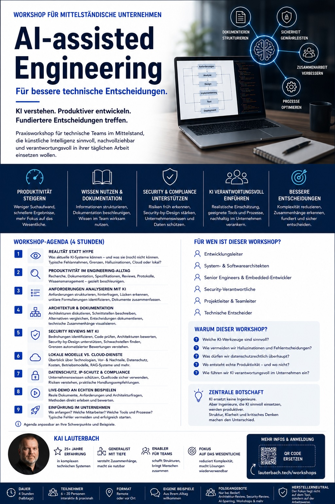

Praxisworkshop für technische Teams im Mittelstand.
KI als geführtes Engineering-Werkzeug einsetzen: mit klaren Prompts,
Architekturkontext, Review und Verantwortung beim Menschen.
Enablement
Grundidee
Dieser Workshop ist kein KI-Marketing. Es geht nicht um Buzzwords,
Frameworks oder Prompt-Hacks, sondern um reale Engineering-Probleme:
Wie kann KI bei der tatsächlichen Arbeit helfen?
Realität statt Hype: Möglichkeiten, Grenzen und Halluzinationen verstehen
Produktivität im Engineering-Alltag steigern
Prompt Engineering als strukturierte Engineering-Kompetenz nutzen
Anforderungen strukturieren, hinterfragen und Lücken erkennen
Architektur, Schnittstellen und Entscheidungen dokumentieren
Security Reviews und Security-by-Design vorbereiten
Cloud-Dienste, lokale Modelle und RAG-Systeme einordnen

Zentrale Botschaft
KI ersetzt keine Ingenieure, keine Architekten und kein kritisches Denken.
Aber KI kann viele Tätigkeiten beschleunigen und unterstützen. Wer KI
als Werkzeug einsetzen lernt, wird produktiver. Wer KI blind vertraut,
produziert Fehler.
Vibe Coding ohne fachliche Führung erzeugt beliebigen Code. Gute Ergebnisse
entstehen erst, wenn menschliche Erfahrung, Architektur, Review und klare
Arbeitsregeln die Ausgabe der KI führen.
Workshop-Inhalte
Prompting & LLM-Grundlagen
Verstehen, wie Prompts funktionieren
Prompts präzise und überprüfbar formulieren
Grundregeln für LLMs im Engineering anwenden
Fähigkeiten und Grenzen realistisch einschätzen
Ausgaben als Vorschläge behandeln, nicht als Wahrheit
Planung & Architekturführung
Aufgaben fein granular planen
Planung durch KI unterstützen und prüfen lassen
Anforderungen strukturieren
Architekturkontext bewusst vorgeben
Struktur und Architektur als Grundlage sichern
Entscheidungen nachvollziehbar dokumentieren
Coding-Regeln & Review
Arbeitsregeln für AI-assisted Coding definieren
Ohne Review keinen KI-generierten Code übernehmen
Verantwortung beim Entwickler belassen
Code, Architektur und Security gezielt prüfen
Werkzeug nutzen, aber gegenüber der Ausgabe skeptisch bleiben
Kosten, Daten & Werkzeuge
Lange Sessions, Kommandos und automatische Analysen einpreisen
Datenschutz und IP-Schutz berücksichtigen
Unaufbereitete Daten nicht als belastbare Grundlage behandeln
Cloud-Dienste, lokale Modelle und RAG-Systeme vergleichen
Tool-Auswahl an Arbeitsweise und Risiko ausrichten
Besonderheit
Der Workshop wird von einem erfahrenen technischen Architekten durchgeführt:
25 Jahre Engineering-Erfahrung, Softwarearchitektur, Systemarchitektur,
Embedded Systeme, Security Engineering, Automotive Umfeld und technische
Führungsrollen. Dadurch stehen reale technische Probleme im Mittelpunkt.
Mögliche Folgeangebote
Architektur-Review, Security-Review, AI-Sparring, Einführung lokaler Modelle,
Analyse von Engineering-Workflows oder technische Beratung. Kein aggressives
Upselling, keine künstliche Beratungsmaschinerie.